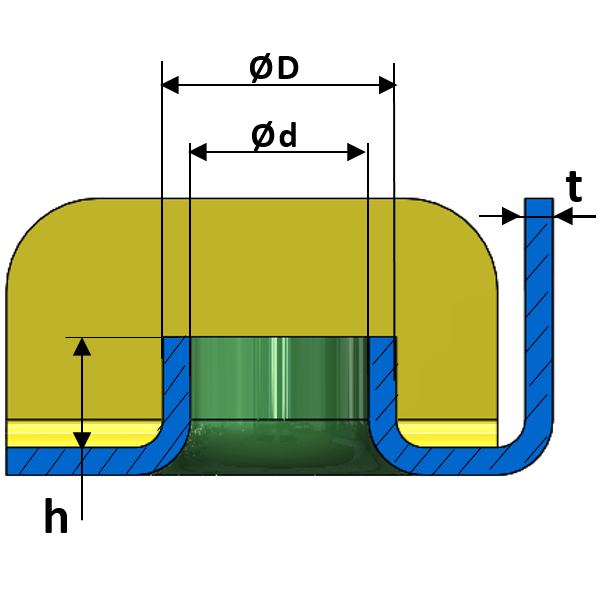

押し出し穴のパラメータは、ユーザーが指定した値に従って設定する必要があります。
一般的なガイドラインとして、以下の値が推奨されます：
条件 1: [1-(ØD-Ød)/(2*t)] は、板厚の 0.5 ～ 0.6 倍の範囲内である必要があります。
条件 2: SQRT{SQR(Ød)-[(SQR(ØD)-SQR(Ød))*(h/t)]} は、板厚の 1.5 倍以上である必要があります。

ここでは、
t = 板厚
d = 押し出し穴の内径
D = 押し出し穴の外径
h = 押し出し穴の高さ